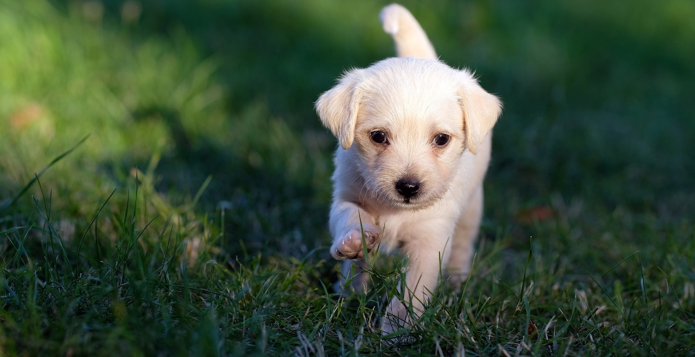
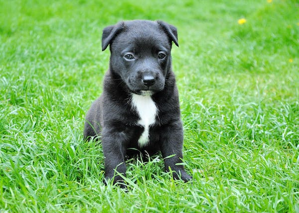
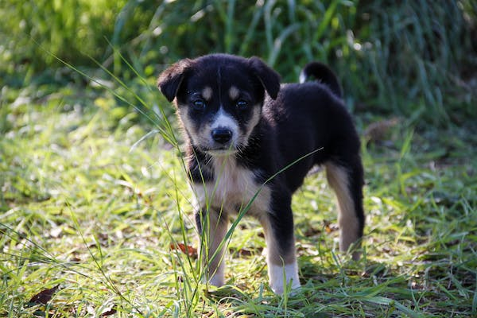
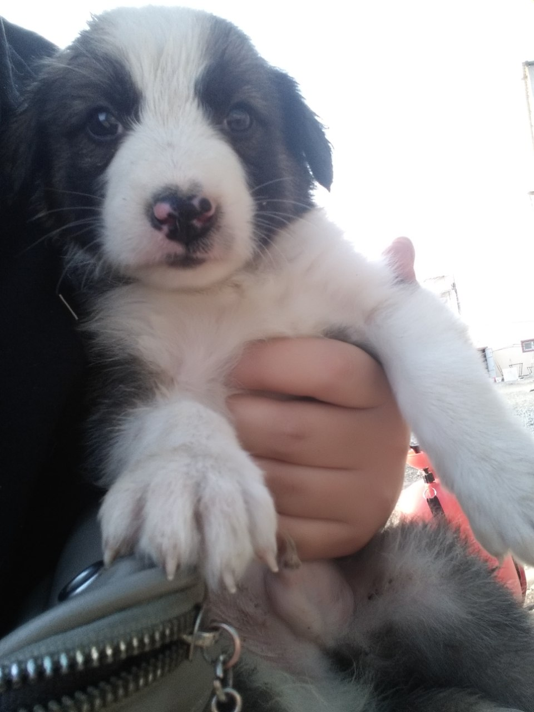
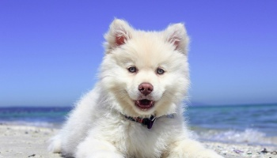
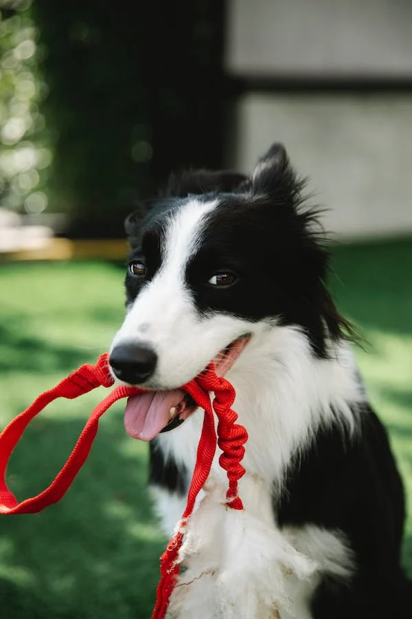
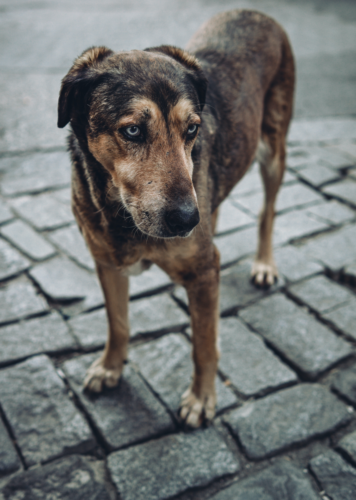
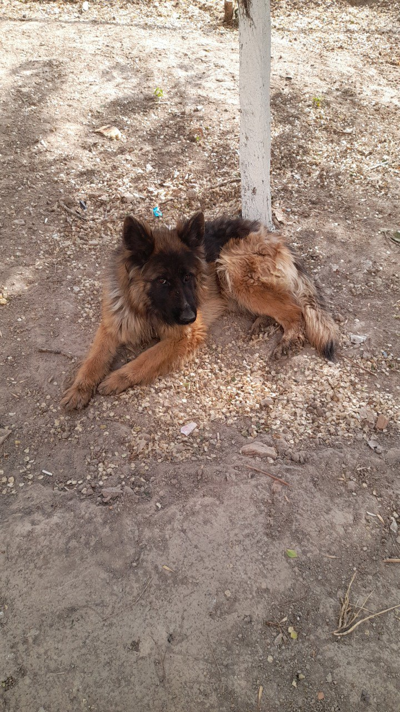

Животные










Как помочь приюту?
В нашем приюте для собак и кошек социализацией, уходом, выгулом, поиском хозяев занимаются добровольцы-волонтёры, поэтому мы будем очень рады вашей помощи
Стать волонтёром
Волонтёр приезжает в приют не менее раза в неделю и помогает на постоянной основе
Помочь с лечением
Иногда наши животные нуждаются в оплате сложных операций и терапии
Привезти корм и инвентарь
Вы очень поможете нам, если привезёте корм и инвентарь для животных
Помочь делом
Нам часто нужны фотографы, грумеры, водители и другие талантливые люди
Взять животное на передержку
Взять животное на пару недель после операции или на время поиска нового дома
Погулять с собаками
Наши подопечные грустят без общения, поэтому мы всегда рады вашему приезду
Помощь приюту
Отклик неравнодушных людей позволяет нам справляться с лечением и реабилитацией животных приюта, перевозить их в клинику и обратно, получать в дар лекарства и осуществлять многие другие важнейшие вещи. Вариантов помощи масса: от полной опеки больного животного до помощи перевозкой или даже простого репоста.
🐕Помощь четвероногим друзьям в Нукусе по добровольной основе вместе с волонтёрами🐾 Вы можете найти здесь верного друга, любимого питомца. Сбор на корм и расходы на лечения собак. 9860350109997626 D.V